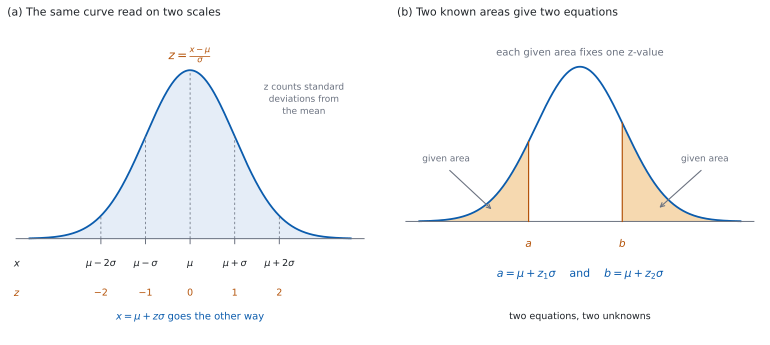

SL 4.12 — Standardization and unknown \(\mu\), \(\sigma\)（標準化と、未知の平均・標準偏差）
- standardized value（\(z\) 値）の定義 \(z = \dfrac{x - \mu}{\sigma}\) を書ける。
- \(z\) が「平均から標準偏差いくつぶん離れているか」を表すことを説明できる。
- \(x\) から \(z\) を、\(z\) から \(x\) を、どちらの向きにも出せる。
- \(z\) を使って、平均や散らばりのちがう \(2\) つの量を比べられる。
- \(P(X < a)\) が与えられて \(\mu\) が未知のとき、\(z\) から \(\mu\) を求められる。
- 同じように、\(\sigma\) が未知のときに \(\sigma\) を求められる。
- \(\mu\) と \(\sigma\) の両方が未知のとき、\(2\) 本の式を連立して解ける。
The idea
1. \(z\) 値とは
\(X \sim N(\mu,\ \sigma^{2})\) のとき、値 \(x\) の standardized value（標準化した値、\(z\) 値）は
\[ z = \frac{x - \mu}{\sigma} \tag{1}\]
です。
公式集の 4.12 の欄に、Standardized normal variable として 式 1 が印刷されています。おぼえる必要はありませんが、どこにあるかは知っておいてください。
分子は「平均からのずれ」です。 \(x - \mu\) は、その値が平均よりどれだけ上（または下）かを表します。
分母でそのずれを \(\sigma\) で測ります。 割ることで、単位が消えます。\(z\) は単位のない数です。
2. \(z\) の読み方
\(z\) は、平均から標準偏差いくつぶん離れているかを表します（図 1 (a)）。
| \(z\) の値 | 意味 |
|---|---|
| \(z = 0\) | ちょうど平均 |
| \(z = 1\) | 平均より \(1\sigma\) 上 |
| \(z = -2\) | 平均より \(2\sigma\) 下 |
| \(z = 0.5\) | 平均より \(0.5\sigma\) 上 |
符号が上下を表します。 \(z > 0\) なら平均より上、\(z < 0\) なら平均より下、\(z = 0\) なら平均そのものです。
大きさが「めずらしさ」の目やすになります。 \(|z|\) が \(2\) をこえると、\(68\)–\(95\)–\(99.7\) のめやす（SL 4.9）から、外側 \(5\%\) ほどの領域に入っていることが分かります。
3. 逆向きに読む
式 1 を \(x\) について解くと
\[ x = \mu + z\sigma \tag{2}\]
です。\(z\) が分かれば \(x\) が出ます。
この形が、後半でずっと使う道具です。 \(\mu\) が未知なら 式 2 は \(\mu\) についての \(1\) 次方程式、\(\sigma\) が未知なら \(\sigma\) についての \(1\) 次方程式になります。
4. \(z\) でくらべる
単位のちがう \(2\) つの量は、そのままでは比べられません。 数学のテスト（\(100\) 点満点）と、走った時間（秒）を並べても意味がありません。
\(z\) に直すと比べられます。 どちらも「そのグループの中で平均から \(\sigma\) いくつぶん離れているか」という同じものさしになるからです。
同じ種類の量でも、平均や散らばりがちがえば \(z\) で比べます。 テスト A とテスト B の点をそのまま比べても、難しさがちがえば意味がありません。
大きいほうがよいとはかぎりません。 走った時間のように「小さいほどよい」量では、\(z\) が小さい（負で絶対値が大きい）ほうがよい成績です。何がよいのかを、問題文から読み取ってください。
5. \(\mu\) か \(\sigma\) が未知のとき
「\(P(X < a) = p\) で、\(\mu\) が未知」という問題は、次の \(3\) 歩で解けます。
| 歩 | すること |
|---|---|
| \(1\) | 面積 \(p\) から \(z\) を出す（invNorm(p, 0, 1)） |
| \(2\) | 式 2 に \(a\)、\(z\)、分かっているほうを代入する |
| \(3\) | \(1\) 次方程式を解く |
\(1\) 歩目で使うのは、平均 \(0\)、標準偏差 \(1\) の正規分布です。 これを standard normal distribution（標準正規分布）といい、その変数をふつう \(Z\) と書きます。
\(\mu\) が分からないので、\(\mu\) を入れずに済ませる必要があります。 \(z\) は単位のない数なので、これができます。
\(2\) 歩目の代入で、未知数は \(1\) つだけ残ります。 \(\mu\) が未知なら \(a = \mu + z\sigma\) を \(\mu\) について、\(\sigma\) が未知なら \(\sigma\) について解きます。
面積は左からで入れます。 \(P(X > a) = p\) と書かれていたら、\(1 - p\) を入れます（SL 4.9）。
6. 両方が未知のとき
\(\mu\) も \(\sigma\) も分からないときは、面積が \(2\) つ与えられます（図 1 (b)）。
それぞれから \(z_{1}\)、\(z_{2}\) を出すと
\[ a = \mu + z_{1}\sigma, \qquad b = \mu + z_{2}\sigma \tag{3}\]
という、\(\mu\) と \(\sigma\) についての連立 \(1\) 次方程式になります。
引くと \(\mu\) が消えます。 \(b - a = (z_{2} - z_{1})\sigma\) なので
\[ \sigma = \frac{b - a}{z_{2} - z_{1}} \tag{4}\]
です。\(\sigma\) が出たら、どちらかの式にもどして \(\mu\) を出します。
\(z_{1} \ne z_{2}\) でなければ解けません。 同じ面積が \(2\) 回与えられても、式が \(1\) 本しかないのと同じです。
GDC に solve( はありません。 この連立は手で解きます（GDC の節）。
7. 答案の書きかた
使った \(z\) の値を書いてください。 GDC が出した値を、小数第 \(4\) 位くらいまで書き写します。これが「\(z\) を使って解いた」という証拠になります。
丸めるのは最後です。 途中の \(z\) を \(3\) 桁に丸めてから代入すると、答えの \(3\) 桁目がずれることがあります。GDC の値をそのまま使ってください。
最後の答えは、割り切れるときはその値を、割り切れないときは有効数字 \(3\) 桁で書きます。
\(\sigma\) は必ず正です。 負の \(\sigma\) が出たら、どこかで符号を取りちがえています。
シラバスは、正規分布の確率と値をGDC で求めるとしています。だから、その数値を出す問題は Paper 2 で出ます。
単元全体が Paper 1 の対象外というわけではありません。 与えられた \(x\)、\(\mu\)、\(\sigma\) からの \(z\) の計算、標準化の意味、\(z\) の符号の読み方は、電卓なしでも問われます。
GDC を使うのは、面積から \(z\) を出すところです。 \(x\)、\(\mu\)、\(\sigma\) が分かっているときの \(z\) は、引き算と割り算だけなので手で出せます。
それでも、答えの見当は手でつけられます。 面積が \(0.5\) より大きいか小さいかで \(z\) の符号が決まり、そこから \(\mu\) が \(a\) より上か下かが決まります。

Why it works
なぜ、\(z\) に直すと比べられるのでしょうか。 どの正規分布も、同じ曲線を平行移動して拡大・縮小したものだからです（SL 4.9）。
\(\mu\) を引くと中心が \(0\) に移り、\(\sigma\) で割ると広がりが \(1\) になります。残るのは「\(\sigma\) いくつぶん離れているか」だけです。
だから、\(\mu\) も \(\sigma\) もちがう \(2\) つの分布でも、\(z\) に直せば同じものさしの上に並びます。
なぜ、\(z\) の分布は \(\mu\) にも \(\sigma\) にもよらないのでしょうか。 \(X \sim N(\mu,\ \sigma^{2})\) のとき
\[ P(X < a) = P\!\left(\frac{X - \mu}{\sigma} < \frac{a - \mu}{\sigma}\right) \]
だからです。左辺の不等式の両辺に同じ操作（\(\mu\) を引いて、正の数 \(\sigma\) で割る）をしただけなので、確率は変わりません。
\(\sigma > 0\) が効いています。 正の数で割るので、不等号の向きが変わりません。ここが、\(\sigma\) が必ず正であることを使っている場所です。
書きかえで変わったのは、変数と境目だけです。 変数は \(Z = \dfrac{X - \mu}{\sigma}\) に、境目は \(\dfrac{a - \mu}{\sigma}\) になりました。
この \(Z\) は、\(\mu\) と \(\sigma\) が何であっても同じ分布に従います。 \(\mu\) を引くと中心が \(0\) に移り、正の数 \(\sigma\) で割ると広がりが \(1\) になります。正規分布を平行移動して拡大・縮小したものはやはり正規分布なので、\(Z \sim N(0,\ 1^{2})\) です。これが第 5 節の標準正規分布です。
\(\mu\) と \(\sigma\) が残るのは、境目のほうだけです。 だから面積 \(p\) に対応する \(z\) は、\(\mu\) や \(\sigma\) を知らなくても出せます。
なぜ、\(\mu\) が未知でも解けるのでしょうか。 いま見たとおり、\(z\) の側は \(\mu\) を含まないからです。
面積から \(z\) を出したあと、式 1 の分子・分母にもどると
\[ z = \frac{a - \mu}{\sigma} \]
で、\(a\)、\(z\)、\(\sigma\) が分かっていれば \(\mu\) についての \(1\) 次方程式です。両辺に \(\sigma\) をかけて \(\mu = a - z\sigma\) です。
\(\sigma\) が未知のときも同じです。 \(z\sigma = a - \mu\) から \(\sigma = \dfrac{a - \mu}{z}\) です。ただし \(z \ne 0\) が要ります。 \(z = 0\) は面積が \(0.5\) のときで、そのときは \(a = \mu\) という情報しか得られず、\(\sigma\) は決まりません。
なぜ、両方が未知だと面積が \(2\) つ要るのでしょうか。 未知数が \(2\) つあるからです。
式 3 は \(\mu\) と \(\sigma\) についての \(1\) 次の連立方程式です。引き算で \(\mu\) を消すと 式 4 が出ます。\(z_{2} \ne z_{1}\) なら、この分母は \(0\) でないので \(\sigma\) が決まり、そこから \(\mu\) も決まります。
\(b > a\) と \(z_{2} > z_{1}\) は同時に起こります。 だから 式 4 の分子と分母は同じ符号で、\(\sigma > 0\) が出ます。負の \(\sigma\) が出たら、\(2\) つの面積のどちらかを取りちがえています。
Worked examples
問題文は英語です。意味が理解できなかったら、問題文の下の「日本語訳」を開いてください。解説は日本語です。
GDC を使うのは、面積から \(z\) を出すところです（Paper 2）。 \(x\)、\(\mu\)、\(\sigma\) からの \(z\) の計算は、電卓なしでも進めます。どの問題で GDC を使うかは、演習のまえがきに書きました。答えは、割り切れるときはその値を、割り切れないときは有効数字 \(3\) 桁（\(3\) significant figures）で書きます。
例題 1 The random variable \(X\) follows the distribution \(X \sim N(54,\ 8^{2})\).
(a) Find the standardized value of \(x = 66\).
(b) Find the value of \(x\) whose standardized value is \(-0.75\).
(c) Interpret the answer to part (a) in words.
日本語訳
確率変数 \(X\) は \(X \sim N(54,\ 8^{2})\) に従います。
(a) \(x = 66\) の標準化した値を求めなさい。
(b) 標準化した値が \(-0.75\) である \(x\) の値を求めなさい。
(c) (a) の答えの意味を言葉で説明しなさい。
\(\mu = 54\)、\(\sigma = 8\) です。
(a) 式 1 にそのまま入れます。
\[ z = \frac{66 - 54}{8} = \frac{12}{8} = 1.5 \]
(b) 式 2 を使います。
\[ x = 54 + (-0.75)(8) = 54 - 6 = 48 \]
(c) Interpret なので、英語で意味を書きます。
試験ではこう書く
The value \(66\) lies \(1.5\) standard deviations above the mean of the distribution.
（\(66\) という値は、平均より標準偏差 \(1.5\) 個ぶん上にある、という意味です。）
検算（(a) について、符号で）。 \(66 > 54\) なので \(z\) は正のはずです ✓ \(1.5 > 0\) です。
検算（(a) について、もどして）。 \(54 + 1.5 \times 8 = 54 + 12 = 66\) ✓ もとの \(x\) にもどりました。
検算（(b) について、符号で）。 \(z = -0.75 < 0\) なので、\(x\) は \(54\) より下のはずです ✓ \(48 < 54\) です。
検算（(b) について、\(\sigma\) いくつぶんか）。 \(54 - 48 = 6\) で、\(\dfrac{6}{8} = 0.75\) ✓ ちょうど \(0.75\sigma\) 下です。
(a) \[z = \frac{66 - 54}{8} = 1.5\]
(b) \[x = 54 + (-0.75)(8) = 48\]
(c) The value \(66\) lies \(1.5\) standard deviations above the mean.
例題 2 In a mathematics test the marks are normally distributed with mean \(58\) and standard deviation \(5\). In a science test the marks are normally distributed with mean \(72\) and standard deviation \(10\). Aiko scores \(65\) in mathematics and \(83\) in science.
(a) Find Aiko’s standardized value in each test.
(b) Identify the test in which Aiko performed better relative to the other candidates. Justify your answer.
日本語訳
数学のテストの点は、平均 \(58\)、標準偏差 \(5\) の正規分布に従います。理科のテストの点は、平均 \(72\)、標準偏差 \(10\) の正規分布に従います。アイコさんは数学で \(65\) 点、理科で \(83\) 点を取りました。
(a) それぞれのテストでのアイコさんの標準化した値を求めなさい。
(b) 他の受験者と比べて、アイコさんの成績がよかったのはどちらのテストかを答え、理由を書きなさい。
(a) それぞれの \(\mu\) と \(\sigma\) を使います。
\[ z_{\text{maths}} = \frac{65 - 58}{5} = \frac{7}{5} = 1.4 \]
\[ z_{\text{science}} = \frac{83 - 72}{10} = \frac{11}{10} = 1.1 \]
(b) 点の差ではなく、\(z\) の差で比べます。 理科の \(83\) 点は数学の \(65\) 点より高い点ですが、理科は平均も散らばりも大きいので、そのままでは比べられません。
\(1.4 > 1.1\) なので、数学のほうが、集団の中での位置は上です。
試験ではこう書く
In mathematics \(z = 1.4\) and in science \(z = 1.1\). Both are positive, so Aiko was above the mean in both tests, but \(1.4 > 1.1\), so she was further above the mean, measured in standard deviations, in mathematics. Aiko performed better in mathematics relative to the other candidates.
（数学では \(z = 1.4\)、理科では \(z = 1.1\) である。どちらも正なので両方で平均より上だが、\(1.4 > 1.1\) なので、標準偏差で測ると数学のほうが平均から上に離れている。だから、他の受験者と比べた成績は数学のほうがよい、という意味です。）
検算（符号で）。 \(65 > 58\)、\(83 > 72\) なので、どちらの \(z\) も正のはずです ✓ どちらも正です。
検算（\(\sigma\) いくつぶんか）。 数学は \(7\) 点上で \(\sigma = 5\)、理科は \(11\) 点上で \(\sigma = 10\) です。\(7\) は \(5\) の \(1\) 個ぶんより多く、\(11\) は \(10\) の \(1\) 個ぶんより少ししか多くありません ✓ 数学のほうが離れています。
検算（点の差では逆になる）。 生の点では \(83 > 65\) で理科が上に見えます ✓ 答えが逆になるので、\(z\) で比べる意味があります。
(a) \[z_{\text{maths}} = \frac{65 - 58}{5} = 1.4, \qquad z_{\text{science}} = \frac{83 - 72}{10} = 1.1\]
(b) In mathematics \(z = 1.4\) and in science \(z = 1.1\). Since \(1.4 > 1.1\), Aiko is further above the mean in standard deviations in mathematics, so she performed better in mathematics.
例題 3 The random variable \(X\) follows the distribution \(X \sim N(\mu,\ 6^{2})\), where \(\mu\) is unknown. It is given that \(P(X < 40) = 0.15\).
(a) Find the value of \(z\) for which \(P(Z < z) = 0.15\), where \(Z \sim N(0,\ 1^{2})\).
(b) Find the value of \(\mu\).
(c) Explain why \(\mu\) must be greater than \(40\).
日本語訳
確率変数 \(X\) は \(X \sim N(\mu,\ 6^{2})\) に従い、\(\mu\) は未知です。\(P(X < 40) = 0.15\) であることが分かっています。
(a) \(Z \sim N(0,\ 1^{2})\) として、\(P(Z < z) = 0.15\) となる \(z\) の値を求めなさい。
(b) \(\mu\) の値を求めなさい。
(c) \(\mu\) が \(40\) より大きくなければならない理由を説明しなさい。
(a) invNorm(0.15, 0, 1) を使います。
\[ z = -1.0364\ldots \]
(b) 式 2 に \(x = 40\)、\(z = -1.0364\ldots\)、\(\sigma = 6\) を入れます。
\[ 40 = \mu + (-1.0364\ldots)(6) \]
\[ \mu = 40 + 6.2186\ldots = 46.2186\ldots \]
\[ \mu = 46.2 \ (3 \text{ s.f.}) \]
(c) Explain なので、英語で理由を書きます。
試験ではこう書く
Since \(P(X < 40) = 0.15 < 0.5\), less than half of the area lies to the left of \(40\). The mean splits the area into two halves, so \(40\) must lie to the left of the mean, that is \(\mu > 40\).
（\(P(X < 40) = 0.15\) は \(0.5\) より小さいので、\(40\) の左側の面積は全体の半分に満たない。平均は面積を半分ずつに分けるので、\(40\) は平均より左にある、つまり \(\mu > 40\) である、という意味です。）
検算（\(z\) の符号で）。 面積 \(0.15 < 0.5\) なので \(z < 0\) のはずです ✓ \(-1.0364\ldots < 0\) です。
検算（もどして）。 normCdf(-10^9, 40, 46.2186, 6) は \(0.150\) です ✓ もとの面積にもどりました。
検算（\(\sigma\) いくつぶんか）。 \(\dfrac{46.2186 - 40}{6} = 1.036\ldots\) ✓ ちょうど \(1\) 個ぶん少し、という大きさで、\(0.15\) という面積と合っています（\(\mu - \sigma\) より下は約 \(16\%\)）。
検算（丸める前の値を使ったか）。 \(z\) を \(-1.04\) に丸めてから入れると \(\mu = 46.24\) で、\(4\) 桁目からずれます ✓ ここでは \(3\) 桁に丸めればどちらも \(46.2\) ですが、\(\sigma\) が大きい問題では \(3\) 桁目までずれます。たとえば \(\sigma = 30\) なら、正しくは \(71.1\)、丸めてから入れると \(71.2\) です。
(a) invNorm\((0.15, 0, 1)\) \[z = -1.0364\ldots\]
(b) \[40 = \mu + (-1.0364\ldots)(6)\] \[\mu = 46.2\]
(c) \(P(X < 40) = 0.15 < 0.5\), so less than half the area is to the left of \(40\). The mean splits the area in half, so \(40\) is to the left of the mean and \(\mu > 40\).
例題 4 The random variable \(X\) follows the distribution \(X \sim N(\mu,\ \sigma^{2})\), where \(\mu\) and \(\sigma\) are both unknown. It is given that \(P(X < 30) = 0.1\) and \(P(X > 50) = 0.2\). Find the values of \(\mu\) and \(\sigma\).
日本語訳
確率変数 \(X\) は \(X \sim N(\mu,\ \sigma^{2})\) に従い、\(\mu\) と \(\sigma\) はどちらも未知です。\(P(X < 30) = 0.1\)、\(P(X > 50) = 0.2\) であることが分かっています。\(\mu\) と \(\sigma\) の値を求めなさい。
\(2\) つの面積を、どちらも左からに直します。 \(P(X > 50) = 0.2\) は \(P(X < 50) = 0.8\) です。
\(z\) を \(2\) つ出します。
\[ z_{1} = \text{invNorm}(0.1, 0, 1) = -1.2815\ldots \]
\[ z_{2} = \text{invNorm}(0.8, 0, 1) = 0.8416\ldots \]
式 3 を書きます。
\[ 30 = \mu + (-1.2815\ldots)\sigma, \qquad 50 = \mu + (0.8416\ldots)\sigma \]
引いて \(\mu\) を消します（式 4）。
\[ \sigma = \frac{50 - 30}{0.8416\ldots - (-1.2815\ldots)} = \frac{20}{2.1231\ldots} = 9.4198\ldots \]
\[ \sigma = 9.42 \ (3 \text{ s.f.}) \]
\(\mu\) にもどします。
\[ \mu = 30 + 1.2815\ldots \times 9.4198\ldots = 30 + 12.0720\ldots = 42.0720\ldots \]
\[ \mu = 42.1 \ (3 \text{ s.f.}) \]
検算（符号で）。 \(0.1 < 0.5\) なので \(z_{1} < 0\)、\(0.8 > 0.5\) なので \(z_{2} > 0\) のはずです ✓ 合っています。
検算（\(\sigma\) が正か）。 \(\sigma = 9.4198\ldots > 0\) ✓ 負が出たら、面積を取りちがえています。
検算（\(\mu\) の位置）。 \(\mu = 42.07\ldots\) は \(30\) と \(50\) の間にあります ✓ 左に \(0.1\)、右に \(0.2\) しかないので、平均はこの \(2\) つの値の間に入ります。
検算（もどして）。 normCdf(-10^9, 30, 42.072, 9.4198) は \(0.100\)、normCdf(50, 10^9, 42.072, 9.4198) は \(0.200\) です ✓ どちらももとの面積にもどりました。
検算（\(\mu\) は真ん中より右か）。 左の面積 \(0.1\) のほうが右の面積 \(0.2\) より小さいので、\(30\) のほうが \(50\) より平均から遠いはずです。\(42.07 - 30 = 12.07\)、\(50 - 42.07 = 7.93\) ✓ 合っています。
invNorm\((0.1, 0, 1)\) \[z_{1} = -1.2815\ldots\]
invNorm\((0.8, 0, 1)\) \[z_{2} = 0.8416\ldots\]
\[30 = \mu - 1.2815\ldots\,\sigma, \qquad 50 = \mu + 0.8416\ldots\,\sigma\]
\[\sigma = \frac{20}{2.1231\ldots} = 9.42, \qquad \mu = 42.1\]
Common errors
面積から \(z\) を出すときは invNorm(area, 0, 1) です（第 5 節）。\(\mu\) が未知なのですから、\(\mu\) を入れることはできません。
\(z = -1.04\) のように \(3\) 桁に丸めてから使うと、答えの \(3\) 桁目がずれることがあります（第 7 節）。GDC の値をそのまま使い、丸めるのは最後だけです。
invNorm に入れる
invNorm は左の面積を取ります（SL 4.9）。\(P(X > a) = 0.2\) なら \(0.8\) を入れます。
単位や平均・標準偏差がちがう量は、\(z\) に直してから比べます（第 4 節）。大きいほうがよいとはかぎらないことにも注意してください。
\(\sigma\) は必ず正です（第 6 節）。負が出たら、\(2\) つの面積のどちらかを取りちがえています。
Using your GDC (TI-Nspire CX II)
以下は TI-Nspire CX II の操作です。ほかの機種では名前がちがいます。
手順は答案に書きません。 書くのは、使った関数と入れた数（invNorm(0.15, 0, 1) など）と、出た \(z\) の値、そして立てた式です。
1. 面積から \(z\) を出す
menu → Statistics → Distributions から正規分布の逆（inverse）を選びます。
invNorm(area, μ, σ) に \(\mu = 0\)、\(\sigma = 1\) を入れます。 これで、平均 \(0\)・標準偏差 \(1\) の正規分布での値、つまり \(z\) が出ます。
invNorm に入れる面積
| 問題文 | 入れる面積 |
|---|---|
| \(P(X < a) = 0.15\) | \(0.15\) |
| \(P(X > a) = 0.15\) | \(0.85\) |
| 上位 \(20\%\) の境目 | \(0.8\) |
| 下位 \(20\%\) の境目 | \(0.2\) |
画面に出た値を、丸めずに書きとめてください。 小数第 \(4\) 位まで書いておけば、あとの計算で \(3\) 桁目がずれません。
2. 出た式は手で解く
TI-Nspire CX II に solve( はありません。 式 2 や 式 3 は、紙の上で解きます。
\(1\) つが未知のときは、移項だけです。 \(a = \mu + z\sigma\) から \(\mu = a - z\sigma\)、または \(\sigma = \dfrac{a - \mu}{z}\) です。
\(2\) つが未知のときは、引き算で \(\mu\) を消します。 式 4 の形にしてから、電卓で割り算をします。
3. 答えを normCdf で確かめる
出た \(\mu\)、\(\sigma\) をもとの問題にもどします。 normCdf(-10^9, a, μ, σ) が、与えられた面積になるか見ます。
\(\sigma\) が正かを見ます。 負なら、面積の取りちがえです。
\(\mu\) が正しい側にあるかを見ます。 面積が \(0.5\) より小さければ \(a < \mu\)、大きければ \(a > \mu\) です。
\(\sigma\) の大きさを見ます。 \(a\) が \(\mu\) から \(\sigma\) の \(1\) 個ぶんくらい離れていれば、\(a\) から見て \(\mu\) と反対側の面積は \(0.16\) ほど、\(2\) 個ぶんなら \(0.023\) ほどです（SL 4.9）。桁がちがえば、\(z\) の入力を疑います。
Exercises
各問題に、折りたたみが \(3\) つ付いています。日本語訳、解答例（答案用紙に書くべきこと。英語です。英語の答案例が付くものもあります）、解説（なぜそうなるか。日本語です）。
まず自分で解いて、次に解答例と見くらべてください。解説は、合わなかったときだけ開けば十分です。
GDC を使うのは \(4\)・\(5\)・\(6\)・\(9\)・\(10\)（面積から \(z\) を出す問題）です。 \(1\)・\(2\)・\(3\)・\(7\)・\(8\) は、標準化の計算と読み取りだけなので、電卓なしで解けます。
1 The random variable \(X\) follows the distribution \(X \sim N(40,\ 5^{2})\). Find the standardized value of \(x = 49\).
日本語訳
確率変数 \(X\) は \(X \sim N(40,\ 5^{2})\) に従います。\(x = 49\) の標準化した値を求めなさい。
\[z = \frac{49 - 40}{5} = 1.8\]
2 The random variable \(X\) follows the distribution \(X \sim N(120,\ 16^{2})\). Find the value of \(x\) whose standardized value is \(-2.25\).
日本語訳
確率変数 \(X\) は \(X \sim N(120,\ 16^{2})\) に従います。標準化した値が \(-2.25\) である \(x\) の値を求めなさい。
\[x = 120 + (-2.25)(16) = 84\]
3 At a swimming club the times for one length are normally distributed with mean \(52\) seconds and standard deviation \(4\) seconds. In a separate fitness test, the scores are normally distributed with mean \(75\) points and standard deviation \(12\) points. A member swims a length in \(46\) seconds and scores \(90\) points in the fitness test. Identify which of the two results is further from its mean, relative to the other members. Justify your answer.
日本語訳
あるスイミングクラブでの \(1\) 往復のタイムは、平均 \(52\) 秒、標準偏差 \(4\) 秒の正規分布に従います。これとは別の体力テストの得点は、平均 \(75\) 点、標準偏差 \(12\) 点の正規分布に従います。ある会員は、\(1\) 往復を \(46\) 秒で泳ぎ、体力テストで \(90\) 点を取りました。他の会員と比べて、\(2\) つの結果のうち平均からより離れているのはどちらかを答え、理由を書きなさい。
\[z_{\text{swim}} = \frac{46 - 52}{4} = -1.5, \qquad z_{\text{test}} = \frac{90 - 75}{12} = 1.25\]
\(|-1.5| > |1.25|\), so the swim time is further from its mean
秒と点は単位がちがうので、そのままでは比べられません。\(z\) に直すと、どちらも「\(\sigma\) いくつぶん離れているか」という同じものさしになります（第 4 節）。
符号がちがうのは、よい方向がちがうからです。 タイムは小さいほうがよい量なので \(z\) は負、得点は大きいほうがよい量なので \(z\) は正です。「平均からの離れかた」を比べるので、絶対値で比べます。
検算（もどして）。 \(52 + (-1.5)(4) = 52 - 6 = 46\)、\(75 + (1.25)(12) = 75 + 15 = 90\) ✓ どちらももとの値にもどりました。
検算（めやすで）。 \(|z| = 1.5\) は \(\mu \pm \sigma\) の外、\(\mu \pm 2\sigma\) の中です。\(|z| = 1.25\) も同じ範囲ですが、より内側です ✓
検算（単位を落としていないか）。 \(z\) には秒も点も付きません ✓ 付いていたら、割り算をどこかで忘れています。
試験ではこう書く
For the swim, \(z = \dfrac{46 - 52}{4} = -1.5\). For the fitness test, \(z = \dfrac{90 - 75}{12} = 1.25\). The two z-values have no units, so they can be compared even though one result is a time and the other a score. Since \(|-1.5| = 1.5 > 1.25\), the swim time is further from its mean, measured in standard deviations.
4 The random variable \(X\) follows the distribution \(X \sim N(\mu,\ 4^{2})\). It is given that \(P(X > 25) = 0.10\). Find the value of \(\mu\).
日本語訳
確率変数 \(X\) は \(X \sim N(\mu,\ 4^{2})\) に従います。\(P(X > 25) = 0.10\) です。\(\mu\) の値を求めなさい。
invNorm\((0.9, 0, 1)\) \[z = 1.2815\ldots\]
\[25 = \mu + (1.2815\ldots)(4)\]
\[\mu = 19.9\]
右側の面積が与えられているので、左からに直します（第 5 節）。\(P(X < 25) = 0.9\) です。
検算（符号で）。 面積 \(0.9 > 0.5\) なので \(z > 0\) のはずです ✓ \(1.2815\ldots > 0\) です。
検算（\(\mu\) の位置）。 \(z > 0\) なので \(25 > \mu\) のはずです ✓ \(19.87\ldots < 25\) です。
検算（もどして）。 normCdf(25, 10^9, 19.8738, 4) は \(0.100\) です ✓
検算（\(\sigma\) いくつぶんか）。 \(\dfrac{25 - 19.8738}{4} = 1.28\ldots\) ✓ \(\mu + \sigma\) より上が約 \(16\%\)、\(\mu + 2\sigma\) より上が約 \(2.3\%\) なので、\(10\%\) はその間です。
5 The random variable \(X\) follows the distribution \(X \sim N(60,\ \sigma^{2})\). It is given that \(P(X < 52) = 0.025\). Find the value of \(\sigma\).
日本語訳
確率変数 \(X\) は \(X \sim N(60,\ \sigma^{2})\) に従います。\(P(X < 52) = 0.025\) です。\(\sigma\) の値を求めなさい。
invNorm\((0.025, 0, 1)\) \[z = -1.9599\ldots\]
\[52 = 60 + (-1.9599\ldots)\sigma\]
\[\sigma = \frac{-8}{-1.9599\ldots} = 4.08\]
今度は \(\sigma\) が未知です。手順は同じで、最後に \(\sigma\) について解きます（第 5 節）。
検算（符号で）。 面積 \(0.025 < 0.5\) なので \(z < 0\) です ✓ 分子の \(52 - 60 = -8\) も負なので、\(\sigma\) は正になります。
検算（\(\sigma\) が正か）。 \(\sigma = 4.0817\ldots > 0\) ✓
検算（めやすで）。 \(0.025\) は \(\mu - 2\sigma\) より下の割合とほぼ同じです。\(60 - 2 \times 4.08 = 51.84\) ✓ \(52\) に近い値です。
検算（もどして）。 normCdf(-10^9, 52, 60, 4.0817) は \(0.0250\) です ✓
6 The random variable \(X\) follows the distribution \(X \sim N(\mu,\ \sigma^{2})\). It is given that \(P(X < 12) = 0.05\) and \(P(X < 26) = 0.7\). Find the values of \(\mu\) and \(\sigma\).
日本語訳
確率変数 \(X\) は \(X \sim N(\mu,\ \sigma^{2})\) に従います。\(P(X < 12) = 0.05\)、\(P(X < 26) = 0.7\) です。\(\mu\) と \(\sigma\) の値を求めなさい。
invNorm\((0.05, 0, 1)\) \[z_{1} = -1.6448\ldots\]
invNorm\((0.7, 0, 1)\) \[z_{2} = 0.5244\ldots\]
\[12 = \mu - 1.6448\ldots\,\sigma, \qquad 26 = \mu + 0.5244\ldots\,\sigma\]
\[\sigma = \frac{14}{2.1692\ldots} = 6.45, \qquad \mu = 22.6\]
両方が未知なので、式 3 を立てて引きます（第 6 節）。どちらの面積ももともと左からなので、直す必要はありません。
検算（符号で）。 \(0.05 < 0.5\) なので \(z_{1} < 0\)、\(0.7 > 0.5\) なので \(z_{2} > 0\) ✓
検算（\(\sigma\) が正か）。 \(\sigma = 6.4539\ldots > 0\) ✓
検算（\(\mu\) の位置）。 \(\mu = 22.6\ldots\) は \(12\) と \(26\) の間にあります ✓
検算（もどして）。 normCdf(-10^9, 12, 22.6156, 6.4538) は \(0.0500\)、normCdf(-10^9, 26, 22.6156, 6.4538) は \(0.700\) です ✓
7 For a normally distributed random variable, the value \(x = 44\) has standardized value \(0\), and the value \(x = 62\) has standardized value \(2.4\). Find \(\mu\) and \(\sigma\). Describe how your value of \(\sigma\) would change if the second standardized value were \(1.2\) instead of \(2.4\).
日本語訳
正規分布に従うある確率変数について、\(x = 44\) の標準化した値は \(0\) で、\(x = 62\) の標準化した値は \(2.4\) です。\(\mu\) と \(\sigma\) を求めなさい。\(2\) つ目の標準化した値が \(2.4\) ではなく \(1.2\) だったとしたら、\(\sigma\) の値がどう変わるかを述べなさい。
\[\mu = 44\]
\[62 = 44 + 2.4\sigma\]
\[\sigma = \frac{18}{2.4} = 7.5\]
with \(1.2\) instead of \(2.4\) the same distance \(18\) is worth half as many standard deviations, so \(\sigma\) would double to \(15\)
\(1\) つ目から \(\mu\) が出ます（第 2 節）。\(2\) つ目を 式 2 に入れると \(\sigma\) が出ます（第 3 節）。
検算（もどして）。 \(\dfrac{44 - 44}{7.5} = 0\)、\(\dfrac{62 - 44}{7.5} = 2.4\) ✓ どちらの \(z\) にももどりました。
検算（\(\sigma\) が正か）。 \(62 > 44\) で \(z\) も正なので、\(\sigma\) は正になります ✓
検算（半分にしたとき）。 \(\dfrac{18}{1.2} = 15\) で、\(7.5\) の \(2\) 倍です ✓ \(z\) と \(\sigma\) の積が同じ \(18\) なので、片方を半分にすれば、もう片方は \(2\) 倍です。
試験ではこう書く
A standardized value of \(0\) means \(x - \mu = 0\), so \(\mu = 44\). Then \(62 = 44 + 2.4\sigma\) gives \(\sigma = \dfrac{18}{2.4} = 7.5\). If the second standardized value were \(1.2\), the same distance of \(18\) above the mean would be worth only half as many standard deviations, so each standard deviation would have to be twice as large: \(\sigma = \dfrac{18}{1.2} = 15\).
8 A student states that a standardized value can never be greater than \(3\), because almost all of the area lies within three standard deviations of the mean. Comment on the student’s statement.
日本語訳
ある生徒が「標準化した値が \(3\) をこえることはない。ほとんどすべての面積が平均から標準偏差 \(3\) 個ぶんの中にあるからだ」と言いました。この主張について論評しなさい。
values with \(z > 3\) are rare but not impossible: \(P(Z > 3) \approx 0.00135\), which is small but not zero
the statement confuses “unlikely” with “impossible”
Comment on なので、どこまでが正しくて、どこからが言いすぎかを書きます。
正しい部分。 \(\mu \pm 3\sigma\) の中に約 \(99.7\%\) が入る、というのは正しいです（SL 4.9）。
言いすぎの部分。 残りの約 \(0.3\%\) が消えるわけではありません。\(z\) は分数 \(\dfrac{x - \mu}{\sigma}\) なので、\(x\) を大きくすればいくらでも大きくなります。
検算（電卓で）。 normCdf(3, 10^9, 0, 1) は \(0.00135\) です ✓ \(0\) ではありません。
検算（\(z\) の式で）。 \(x = \mu + 10\sigma\) とすれば \(z = 10\) です ✓ \(z\) に上限はありません。
試験ではこう書く
It is true that about \(99.7\%\) of the area lies within three standard deviations of the mean, so a standardized value greater than \(3\) is rare. It is not impossible: \(P(Z > 3) \approx 0.00135\), which is small but not zero. Since \(z = \dfrac{x - \mu}{\sigma}\), any value of \(z\) can be reached by taking \(x\) far enough above the mean, so there is no upper limit on \(z\).
9 The random variable \(X\) follows the distribution \(X \sim N(\mu,\ 12^{2})\). It is given that \(P(X > 100) = 0.75\). Find the value of \(\mu\). Explain what would happen to \(P(X < 100)\) if \(\sigma\) were larger, with \(\mu\) unchanged.
日本語訳
確率変数 \(X\) は \(X \sim N(\mu,\ 12^{2})\) に従います。\(P(X > 100) = 0.75\) です。\(\mu\) の値を求めなさい。\(\mu\) は変えずに \(\sigma\) だけを大きくしたら \(P(X < 100)\) がどうなるかを説明しなさい。
invNorm\((0.25, 0, 1)\) \[z = -0.6744\ldots\]
\[100 = \mu + (-0.6744\ldots)(12)\]
\[\mu = 108\]
\(100 - \mu\) is negative, so a larger \(\sigma\) moves \(\dfrac{100 - \mu}{\sigma}\) closer to \(0\) from below, and \(P(X < 100)\) increases towards \(0.5\)
\(P(X > 100) = 0.75\) なので \(P(X < 100) = 0.25\) です（第 5 節）。
検算（符号で）。 面積 \(0.25 < 0.5\) なので \(z < 0\) ✓
検算（もどして）。 normCdf(100, 10^9, 108.0938, 12) は \(0.750\) です ✓
検算（\(\sigma\) いくつぶんか）。 \(\dfrac{108.0938 - 100}{12} = 0.674\ldots\) ✓ \(1\) 個ぶんより小さく、面積が \(0.25\)（\(0.16\) より大きい）であることと合っています。
検算（\(\sigma\) を大きくしてみる）。 \(\sigma = 20\) にすると normCdf(-10^9, 100, 108.0938, 20) は \(0.343\) です ✓ \(0.25\) より大きくなり、\(0.5\) に近づいています。
試験ではこう書く
Here \(100 - \mu = -8.09\ldots\), which is negative. Writing \(P(X < 100) = P\!\left(Z < \dfrac{100 - \mu}{\sigma}\right)\), a larger \(\sigma\) makes this negative quotient closer to \(0\), and the standard normal curve gives a larger area to the left of a larger value. So \(P(X < 100)\) increases, approaching \(0.5\) as \(\sigma\) grows.
10 The masses, in grams, of a type of packet are normally distributed with unknown mean \(\mu\) and unknown standard deviation \(\sigma\). It is found that \(10\%\) of packets have a mass below \(480\) g and \(5\%\) have a mass above \(520\) g. Find \(\mu\) and \(\sigma\). Interpret the value of \(\sigma\) in this context.
日本語訳
ある種類のパックの質量（グラム）は、平均 \(\mu\)、標準偏差 \(\sigma\) がどちらも未知の正規分布に従います。パックの \(10\%\) は質量が \(480\) g 未満で、\(5\%\) は \(520\) g より大きいことが分かっています。\(\mu\) と \(\sigma\) を求めなさい。\(\sigma\) の値がこの場面で何を表すかを説明しなさい。
invNorm\((0.1, 0, 1)\) \[z_{1} = -1.2815\ldots\]
invNorm\((0.95, 0, 1)\) \[z_{2} = 1.6448\ldots\]
\[480 = \mu - 1.2815\ldots\,\sigma, \qquad 520 = \mu + 1.6448\ldots\,\sigma\]
\[\sigma = \frac{40}{2.9264\ldots} = 13.7, \qquad \mu = 498\]
the masses are spread out about the mean by about \(13.7\) g
\(5\%\) が \(520\) g より上なので、左の面積は \(0.95\) です（第 5 節）。あとは 式 3 と 式 4 です。
検算（符号で）。 \(z_{1} < 0 < z_{2}\) ✓
検算（\(\mu\) の位置）。 \(\mu = 497.5\ldots\) は \(480\) と \(520\) の間にあります ✓
検算（左右のかたより）。 右の面積 \(0.05\) のほうが左の \(0.10\) より小さいので、\(520\) のほうが平均から遠いはずです。\(497.5 - 480 = 17.5\)、\(520 - 497.5 = 22.5\) ✓
検算（もどして）。 normCdf(-10^9, 480, 497.517, 13.6686) は \(0.100\)、normCdf(520, 10^9, 497.517, 13.6686) は \(0.0500\) です ✓
試験ではこう書く
From invNorm, \(z_{1} = -1.2815\ldots\) and \(z_{2} = 1.6448\ldots\), giving \(480 = \mu - 1.2815\ldots\sigma\) and \(520 = \mu + 1.6448\ldots\sigma\). Subtracting, \(\sigma = \dfrac{40}{2.9264\ldots} = 13.7\) g and \(\mu = 498\) g. The standard deviation of about \(13.7\) g measures how spread out the packet masses are: about \(68\%\) of packets have a mass between \(484\) g and \(511\) g.